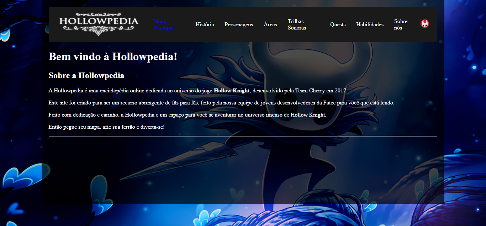

Sobre Mim
Olá! Meu nome é Hugo Eleutério Fermino e sou estudante de Desenvolvimento de Software Multiplataforma (DSM).
Tenho formação Profisional em Administração Tecnologica pela MicroPro e atualmente estou desenvolvendo meus conhecimentos em programação, desenvolvimento web e tecnologia.
Meu objetivo é adquirir experiência profissional e continuar evoluindo na área de desenvolvimento de software.
Formação
Ensino Médio Completo
Profissional administrativo tecnologico
MicroPro
Desenvolvimento de Software Multiplataforma (DSM)
FATEC - Cursando
Habilidades
Projetos
HollowPedia

A Hollowpedia é uma enciclopédia online dedicada ao universo do jogo Hollow Knight, desenvolvido pela Team Cherry em 2017.
Este site foi criado para ser um recurso abrangente de fãs para fãs, feito pela nossa equipe de jovens desenvolvedores da Fatec para você que está lendo.
Feito com dedicação e carinho, a Hollowpedia é um espaço para você se aventurar no universo imenso de Hollow Knight.
Tecnologias Utilizadas
- Linguagem C
- GitHub
- VS Code